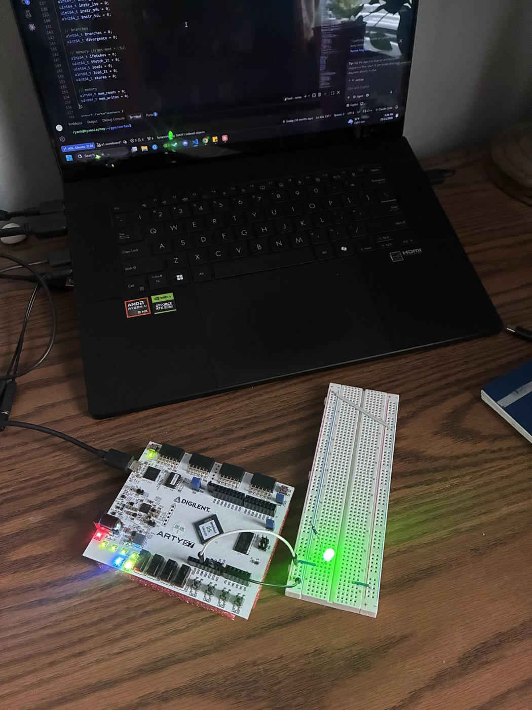
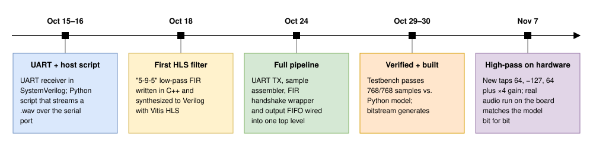
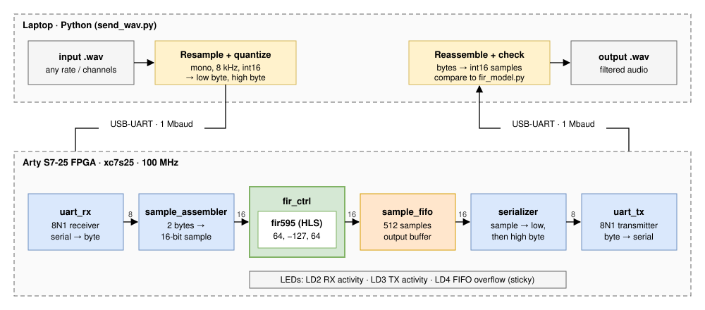
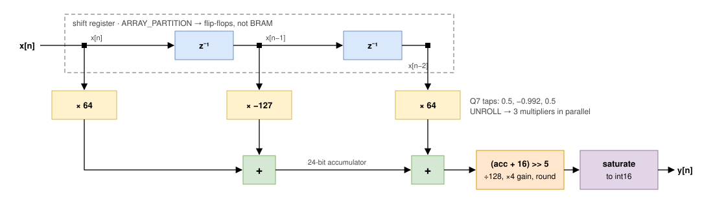
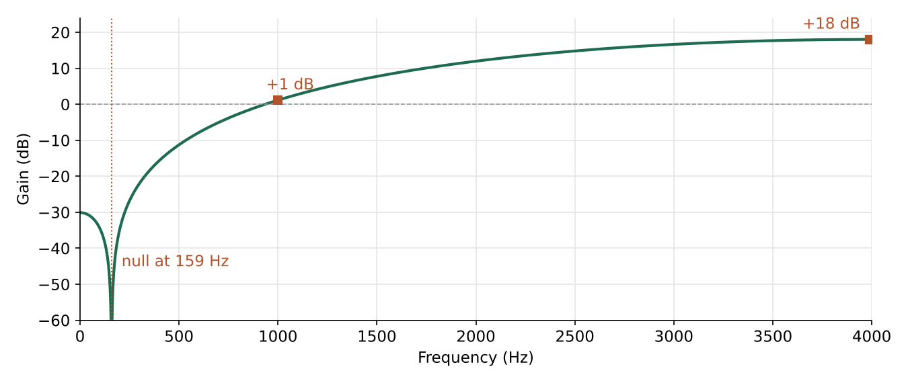
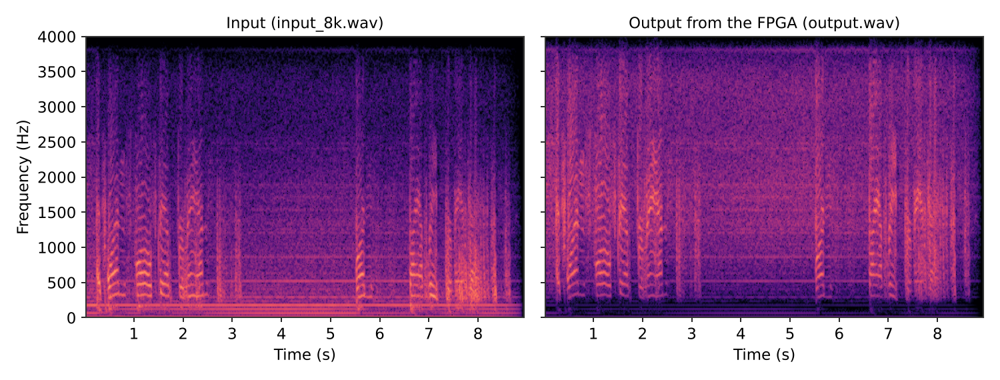

Discovery Project · Oct – Nov 2026
FPGA FIR Filter and Signal Processor
| Team | Team of 2 |
|---|---|
| Tools | Vitis HLS (C++), SystemVerilog, Vivado, Python, Arty S7-25 (Spartan-7) |
| Links | GitHub repository |
A digital filter running in real hardware. A Python script streams a .wav file into a Spartan-7 FPGA over UART, a filter I wrote in C++ and synthesized with Vitis HLS processes every sample, and the filtered audio streams back to the laptop. The output matches a bit-accurate software model on every sample.

The Idea
Filtering is usually something you see as math on a whiteboard: a convolution sum, a frequency response, a few coefficients. I wanted to take one of those equations and turn it into a circuit I could actually listen to. The pitch was simple: pick a small FIR (finite impulse response) filter, build it as hardware on an FPGA, push real audio through it, and hear the difference.
The starting design was a "5-9-5" low-pass filter, a three-tap smoothing filter for 8 kHz, 16-bit audio. That name stuck to the hardware block, which is still called fir595. I also wanted to try high-level synthesis (HLS), where you describe hardware in C++ and a compiler generates the Verilog, because I had only ever written RTL by hand. To keep the focus on the filter, we chose the simplest possible interface: plain UART to and from a laptop, with no AXI bus or processor in the loop.
The Process
We worked in small, testable pieces, adding a new block only once the one before it worked.


The system
On the laptop, send_wav.py reads any .wav file, mixes it to mono, resamples it to 8 kHz, and sends each 16-bit sample as two bytes at 1 Mbaud. On the FPGA, a UART receiver turns the serial line back into bytes, and a sample assembler pairs them into 16-bit samples. A small controller I wrote, fir_ctrl, feeds each sample to the HLS filter core and captures its result. Results go into a 512-sample FIFO, are split back into bytes, and leave through a UART transmitter. The script also limits how many samples are "in flight" at once, so the FIFO can never overflow even when the laptop is slow to read.


The filter
The filter is about 30 lines of C++. A three-entry shift register holds the newest sample and the two before it. Each is multiplied by a coefficient and the products are summed. HLS pragmas turn the shift register into flip-flops instead of block RAM and unroll the loops into three multipliers that run in parallel. The coefficients are stored as Q7 fixed-point integers (the real value times 128), so the hardware never touches floating point.


Verification
Before anything went on the board, I wrote a bit-accurate Python model of the filter. It generates test vectors (impulses, full-scale extremes, sine tones and noise) for a top-level SystemVerilog testbench that drives real UART waveforms into the design and checks every output. The simulation ends with PASS: 768/768 samples match fir_model.py. On hardware, the same model checks every sample that comes back from the board.
Successes and Failures
The biggest design change came from listening. The low-pass filter worked, but its effect on 8 kHz audio was subtle and hard to hear in a demo. I redesigned it as a high-pass filter with taps of 0.5, −0.992 and 0.5, which places a null at 159 Hz and strips out the bass. That made the audio much quieter, so I added a ×4 (+12 dB) output gain. The gain then caused the next problem: loud treble overflowed 16 bits and wrapped around into loud pops. The fix was rounding plus saturation, so overflowing samples clip to the maximum value instead of wrapping.

Most of the other roadblocks were integration bugs rather than filter bugs:
- The HLS handshake. The generated core uses an
ap_start/ap_donehandshake, and its result is only valid for the single clock cycle whenap_doneis high. It also does not register its own input.fir_ctrlexists to hold the input steady and latch the result at exactly the right cycle. - Swapped bytes. If one stray byte reached the board before a run, every sample's high and low bytes were swapped, and every output mismatched. A synchronized reset button and a "press reset, then run" step in the script fixed it.
- Tool setup. The Vivado project targeted the wrong chip, removing the LED pins from the constraints file broke bitstream generation, Python's
serialpackage turned out to be a different library frompyserial, and one COM port was actually a Bluetooth link that timed out. None of these were hard once found, but each cost an afternoon.
The Outcome
The final design runs on the Arty S7-25 at 100 MHz. In the hardware run below, all 71,805 samples that came back from the board matched the Python model exactly. Listen to the two clips: the output loses the low hum and bass, and the higher frequencies of the voice come forward.

ECE Skills Gained
- Digital signal processing: designing FIR coefficients, reading a frequency response, and placing zeros to get the response I wanted.
- Fixed-point arithmetic: Q7 coefficients, sizing a 24-bit accumulator so it can never overflow, rounding, and saturation.
- High-level synthesis: writing C++ for Vitis HLS, using pragmas to control what hardware gets built, and integrating the generated Verilog through its control interface.
- RTL design: UART transmit and receive, FIFOs, reset synchronization, and handshake logic in SystemVerilog.
- Verification: writing a bit-accurate reference model, generating test vectors, and building a self-checking testbench.
- Hardware bring-up: constraints, bitstream generation, programming the board, and debugging serial links between a PC and an FPGA.
Final Thoughts
This project made DSP feel real to me. Hearing a filter I had designed on paper change real audio, and then seeing the hardware match my model on every sample, was the most satisfying part of the semester. It also showed me how much of hardware engineering happens around the core logic: interfaces, handshakes, verification and tool setup took far more time than the filter itself.
It has made me more interested in digital hardware design, especially hardware built for computation. The multiply-accumulate at the heart of this filter is the same operation that AI and ML accelerators perform millions of times in parallel, and that is the direction I want to keep exploring. I would like to continue the project with a longer filter whose coefficients can be loaded over UART, an AXI-Stream interface, and an audio codec so the board can filter live sound in real time instead of a file.